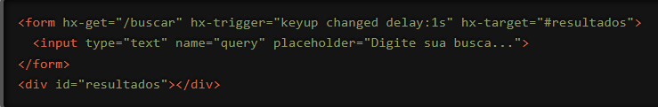

Estamos empolgados em apresentar uma funcionalidade poderosa e flexível do HTMX que transforma a maneira como você lida com eventos em suas aplicações web: o atributo `hx-trigger`. Com `hx-trigger`, você pode controlar precisamente quando e como as requisições HTTP são disparadas, proporcionando uma interatividade refinada e eficiente para seus usuários. Vamos explorar como essa funcionalidade pode elevar o nível das suas aplicações web.
O que é o atributo `hx-trigger`?
O `hx-trigger` é um atributo do HTMX que permite especificar quais eventos devem disparar uma requisição HTTP. Isso significa que você pode definir com precisão quando uma ação no frontend deve resultar em uma comunicação com o servidor. O poder do `hx-trigger` está em sua flexibilidade: você pode usá-lo para escutar eventos como cliques, mudanças em formulários, e até mesmo eventos personalizados.
Como Funciona?
Vamos ver um exemplo prático para entender melhor como o `hx-trigger` pode ser usado. Suponha que você tenha um formulário de pesquisa que deve enviar a requisição ao servidor quando o usuário para de digitar por um segundo:

Neste exemplo, o `hx-trigger` está configurado para disparar a requisição HTTP GET para a URL "/buscar" quando ocorrem os eventos `keyup` (tecla liberada) ou `changed` (valor do campo alterado), com um atraso de 1 segundo (`delay:1s`). A resposta do servidor é então inserida no elemento alvo especificado em `hx-target` (neste caso, o `div` com id "resultados"). Isso permite que a pesquisa seja realizada de maneira eficiente, sem enviar uma requisição a cada tecla pressionada.